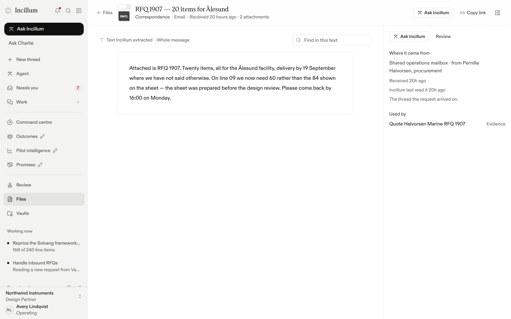
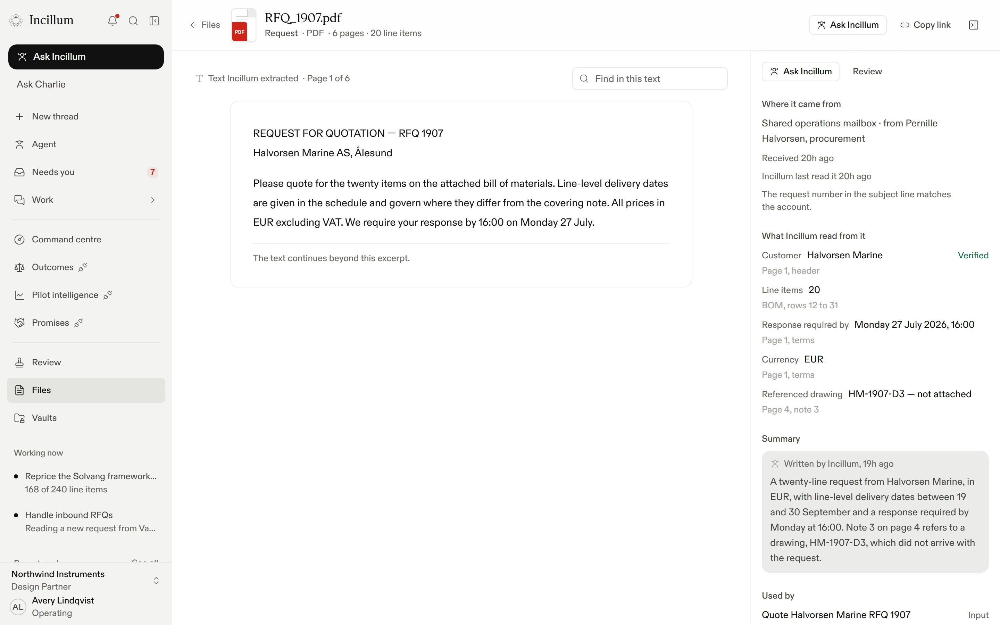
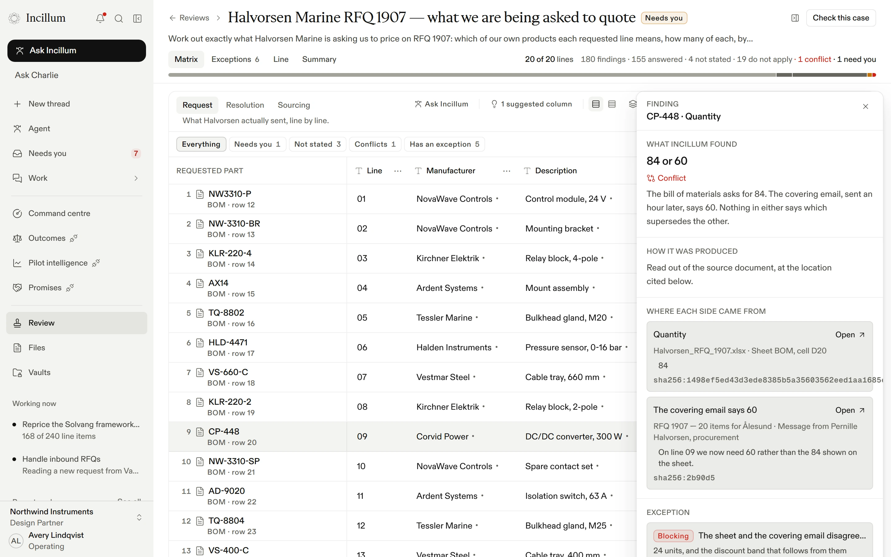
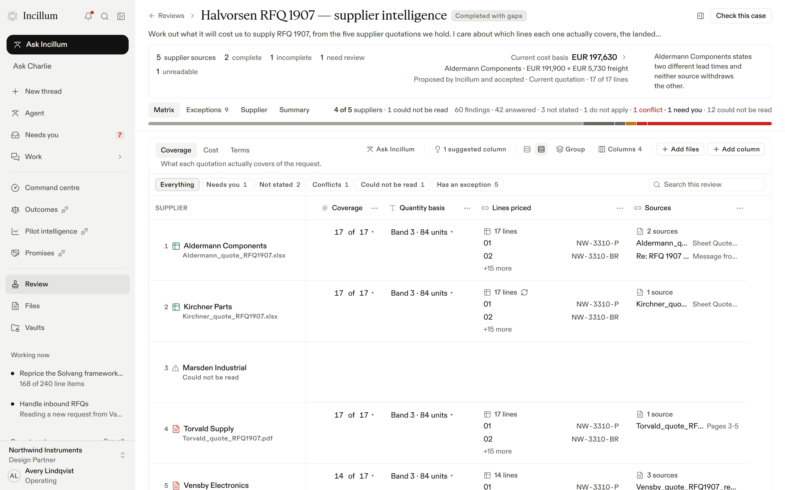

Charlie
The colleague in Incillum for commercial work.
Pernille Halvorsen
RFQ 1907 — 20 items for Ålesund
Attached is RFQ 1907. Twenty items, all for the Ålesund facility. On line 09 we now need 60 rather than the 84 shown on the sheet…
RFQ_1907.pdf 6 pages
Halvorsen_RFQ_1907.xlsx 20 lines
Charlie, in Incillum Studio
ToPernille Halvorsen · Procurement, Halvorsen Marine
SubjectRe: RFQ 1907 — 20 items for Ålesund
Pernille, our quotation for RFQ 1907 is attached: twenty lines, delivery from 19 September, EUR 236,400.00.
Halvorsen_quotation_v3.pdfPDF · 6 pages
Approved by Avery Lindqvist · 08:14Send
Delivered to Halvorsen Marine08:14
- 23:47The request arrives in the shared mailbox
- 23:48The email and both attachments, read
- 01:18Twenty lines onto one sheet
- 03:42Line 09: two sources disagree, both cited
- 06:50Five supplier quotes, costed
- 08:04Under the floor: Avery is asked
- 08:14Approved, and sent
Charlie
Intelligence for commercial work.
incillum.com